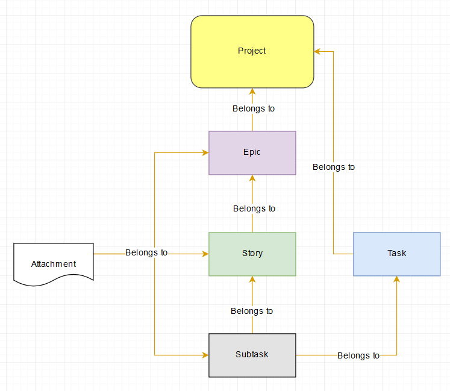

The purpose of this article is to provide access detailed information about the types of issues in MCDI's JIRA Core projects, and their proper usage.
Hierarchy
Issues in JIRA are organized into a parent-child hierarchy under a given JIRA Core project, as illustrated below.

Epics
An epic captures a large body of work. It is essentially a large undertaking (similar to a SharePoint "Component") that can be broken down into a number of smaller stories (similar to SharePoint "Activities").
The average user should not have a business need to create an Epic, unless directed to do so by a superior. When in doubt, please refer to the Issue Type Decision Tree.
Issue Type Decision Tree